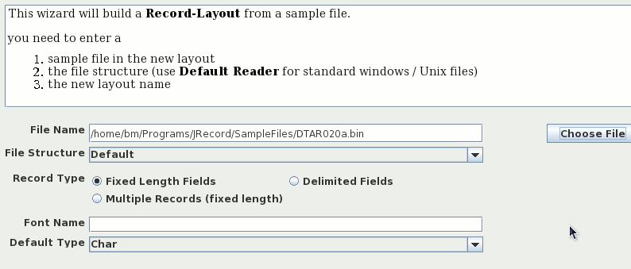
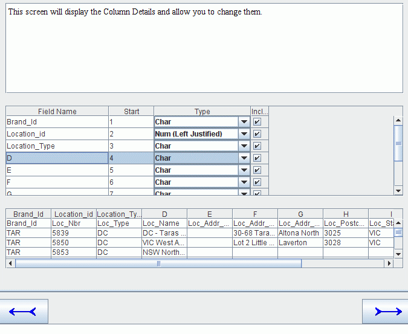
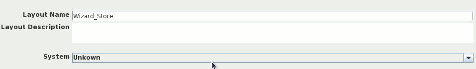
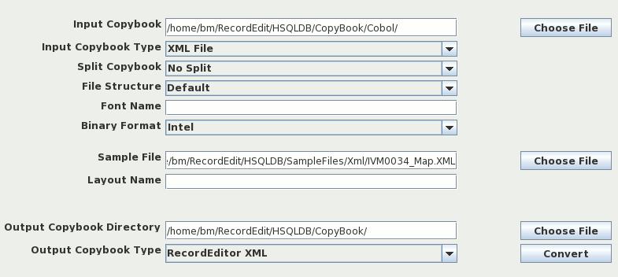

JRecord
JRecord
Layout Wizard |
|||||||||||
|
Layout Wizard |
|||||||||||
The Record Layout Wizard guides you through creating a record layout using a file as the basis. On all the wizard screens, you can use Left and Right Arrow buttons (at the bottom of the screen) to move between the screens. There are 2 basic groups of Screens:
Fixed Width | Screens for defining Fixed field width Files. See "Field Position screen" and "Field Definition screen". |
CSV | Screens for defining a CSV file. See "CSV Details" and "CSV Field Definition" |
On the file screen you enter file details and the name of the record layout being created. The field Record Types determines whether you travel down the Fixed Width route ("File Structure screen", "Field Position screen" and "Field Definition screen") screens or the CSV route ( "CSV Details" and "CSV Field Definition").

Fields on the window are:
File Name | Name of the file you are building a layout for |
File Structure | How the file is organized. If you are using Standard Windows / Linux Text files leave it as Default Reader |
Record Type | This is where your specify whether it is a Fixed Width Single Record, Fixed Width Multi Record, or a CSV file. It also determines whether you see the Fixed Width screens "File Structure screen", "Field Position screen" and "Field Definition screen" or the CSV Screens "CSV Details" and "CSV Field Definition". |
Font Name | Font Name of the file (e.g. CP037 for US Ebcidic Characters). |
Default Type | What Types Fields to initially assign to a field. |
This screen is only displayed when:
The purpose of the screen to determine the file structure for binary files.

Fields
File Structure | How the file is organized. |
Length | Record Length for a fixed width file. You can also set the length by clicking on the record start in the table below. |
Font Name | Font Name of the file (e.g. CP037 for US Ebcidic Characters). |
The second screen displays the file with the fields in alternating background colors.
To create a new field, click on the first column of the field.
To remove a field, click on the first column again

Other Fields Buttons on the screen include:
Mainframe Zoned Decimal | Look for Mainframe Zoned decimal. In Zoned Decimals, The sign is represented as an over-strike of the last character. |
PC/Unix Zoned Decimal | Look for Zoned decimal in the Ascii Character set. |
Comp 3 | Look for Comp 3 (Binary Coded Decimals) in the file. This does not do any harm in EBCDIC files but in Ascii files, Alphabetic Characters can be mistaken for Comp 3 characters. |
Binary Integer (Big Endian) | Look for Binary integers (Big Endian) - Cobol Comp Fields |
The final screen is for defining the field names and field types.
Once all the fields have been defined, click on the right arrow button to define the new layout.

Final screen lets you specify the output directory, Output file and the Output Format. I would suggest using RecordEditor XML

On this screen you specify the basic CSV file structure (i.e. field separator; quotes).

Fields on the Screen
Field Separator | Field used to mark the end of one field and the start of the next | ||||||
Quote Character | Quote character used to surround Text Fields | ||||||
Parser | Parser used to split lines up into fields. For most files, the Basic Parser is the best to use. But the three parsers provided are:
| ||||||
Fields on First Line | Indicates whether the first line of the file holds the field names. |
This screen is used to define the fields (columns) in the file.

Following are the Wizard screens displayed when working a Multi-Record Fixed Field width Data file.
This screen is used to define where the Record-Type Field (the field that determines what type of record it is). You can do one of

This screen lets you define the names of the various records.

This screen displays the file with the fields in alternating background colors.
To create a new field, click on the first column of the field.
To remove a field, click on the first column again

Other Fields Buttons on the screen include:
Mainframe Zoned Decimal | Look for Mainframe Zoned decimal. In Zoned Decimals, The sign is represented as an over-strike of the last character. |
PC/Unix Zoned Decimal | Look for Zoned decimal in the Ascii Character set. |
Comp 3 | Look for Comp 3 (Binary Coded Decimals) in the file. This does not do any harm in EBCDIC files but in Ascii files, Alphabetic Characters can be mistaken for Comp 3 characters. |
Binary Integer (Big Endian) | Look for Binary integers (Big Endian) - Cobol Comp Fields |
Note: The initial values of the Search For + whether a search is done automatically is set in the Edit >>>> Edit Startup Options dialog. See "Startup Options" for more details
This screen is for defining the field names and field types.
Once all the fields have been defined, click on the right arrow button to define the new layout. Use the Record combo to switch between the various records.

On the final screen you define the layout name and layout description

There are several Wizard Field Search options that can be set via the Edit Startup options function (Edit >>>> Edit Startup Options Menu).

The Parameters that can be set are:
Also with Layout Wizard is the Convert Layout utility. It can convert a Layout from one format (say Cobol) to XML. It can also read a sample XML file and write a layout for it.
Following is how to convert a Cobol Copybook to XML. Note: Input Copybook is filled in and Copybook Type is set to Cobol.

To build a layout for a XML file. Note: Sample File is filled in with a XML file and Copybook Type is set to XML.

| JRecord at SourceForge | Download Page | Forums |